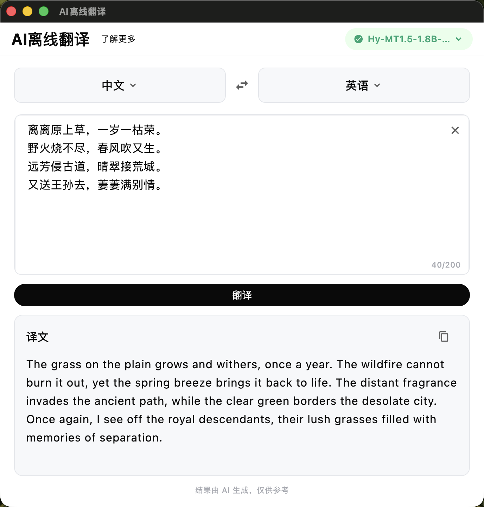
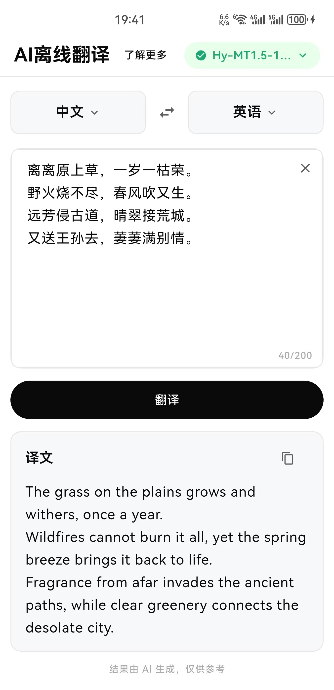

基于 Hy-MT1.5 大模型，推理在本地完成。飞行模式下也能用，数据不出手机。
打字机逐字输出译文，40ms/字渲染节奏，像 AI 聊天一样自然。
一键下载 ModelScope 默认模型，或从本地导入 GGUF 文件。启动自动加载已有模型。
macOS + Android 全功能对齐。Android edge-to-edge 沉浸式布局。
Flutter UI + shared C++ translator_engine + JNI/ObjC++ bridge，不依赖 CLI。
MIT 协议，代码公开。欢迎贡献、学习、二次开发。

macOS

Android
%%{init: {'theme':'dark', 'themeVariables': {'fontFamily':'-apple-system,BlinkMacSystemFont,sans-serif'}, 'flowchart': {'nodeSpacing': 60, 'rankSpacing': 50}}}%%
flowchart TD
Flutter["📱
Flutter UI
Dart
翻译页面 · 模型管理
语言选择 · 打字机渲染"]
Bridge["🔌
Platform Bridge
Swift / Kotlin
模型导入下载 · 文件管理
线程调度"]
Engine["⚙️
TranslatorEngine
C++
llama.cpp 加载模型
tokenize · 推理 · 采样"]
Llama["🧠
llama.cpp
ggml · llama · common
chat template 解析
PR #22836 · STQ1_0"]
Flutter -->|"MethodChannel"| Bridge
Bridge -->|"C++ function call"| Engine
Engine -->|"links against"| Llama
classDef archBox fill:#1a1a1a,stroke:#2a2a2a,color:#e8e8e8,rx:12,ry:12
class Flutter,Bridge,Engine,Llama archBox
Hy-MT1.5 约 440MB（1.25bit 量化），手机端加载完全可行。该量化格式需 llama.cpp PR #22836 支持。
prompt 构建（jinja chat template）→ tokenize → 推理循环（逐 token 生成至 EOS 或 128 token）→ 采样 → 解码为文本。可中途取消（atomic flag）。
| 平台 | 桥接层 | 模型目录 | 编译 |
|---|---|---|---|
| macOS | ObjC++ wrapper → C++ | Application Support | Xcode 静态链接 |
| Android | JNI → C++ | files/models/ | CMake + NDK |
核心是 translator_engine.hpp / .cpp——一个纯 C++ 头文件/实现文件组合，
封装了 llama.cpp 的模型加载、jinja chat template、tokenize、采样和生成循环。上层完全不感知 llama.cpp 内部细节，
只调用三个方法：loadModel() → translate() → cancel()。
translator_engine.hpp
// 纯 C++ 翻译引擎 — 不依赖 Flutter / 平台 struct TranslatorEngine { bool loadModel(const char* model_path); void translate(const char* text, char* out, size_t out_size); void cancel(); bool isModelLoaded(); };
这份引擎代码在两个平台 完全共用——macOS 通过 ObjC++ 直接调用， Android 通过 JNI 桥接，无需修改引擎内部一行代码。
① 模型体积：Hy-MT1.5 约 440MB（1.25bit STQ1_0 量化），手机存储和内存都扛得住。对比原始 bf16（～7GB），体积缩小约 16 倍。
② 推理线程：推理在主线程外独立线程执行（std::thread），不阻塞 UI。取消通过 std::atomic<bool> 标记，推理循环每生成一个 token 就检查一次。
③ n_ctx=256：上下文窗口限制在 256 token。翻译场景不需要长上下文，控制参数能显著降低内存占用和推理延迟。
④ 构建即交付：llama.cpp 被编译为 静态库链接进 App——macOS 用 Xcode 静态链接 arm64 库，Android 用 CMake + NDK 交叉编译 arm64-v8a 库。用户安装的 .apk / .dmg 里面已经包含所有推理能力，不需要额外运行时或 CLI。
⑤ 模型独立管理：模型文件不内置在 App 包体里，用户通过「下载」或「导入」获取，存放在 App 私有目录。这样 App 本体只有 15-30MB，模型 440MB 按需获取。
• 不要手写 prompt：Hy-MT1.5 的 chat template 是 jinja 格式，必须用 llama.cpp common 层的 common_chat_templates_apply()。之前手写 token 序列导致输出全是乱码（重复字符）。
• STQ1_0 需要 PR 分支：llama.cpp 主线不支持 STQ1_0 量化格式，必须用 PR #22836 的分支。仓库通过 git submodule 固定到该 commit。
• Android 只用 arm64-v8a：不要编译 x86/x86_64 ABI。STQ1_0 的 SIMD 路径只适配 ARM NEON，x86 模拟器无法正确推理。